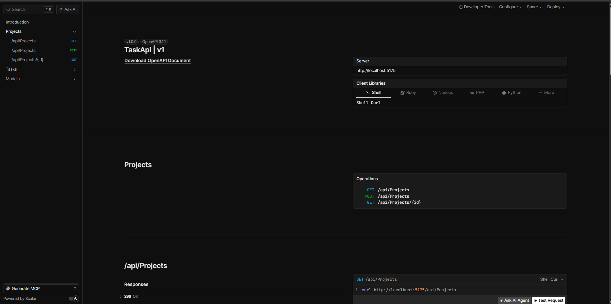
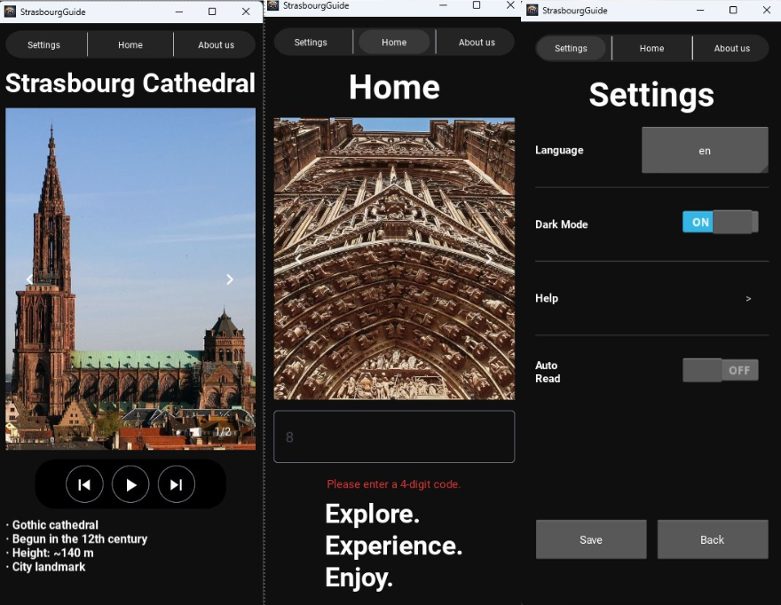

Ich bin Tim, 19, und habe gerade meine Ausbildung zum Fachinformatiker für Anwendungsentwicklung abgeschlossen. Gelernt habe ich im Oracle-Umfeld: APEX, PL/SQL, relationale Datenmodelle.
Das ist eine gute Grundlage, aber eine enge Nische. Deshalb arbeite ich mich seit dem Abschluss in den Stack ein, der außerhalb davon zählt: C#, ASP.NET Core, Entity Framework, REST-APIs. Nicht als Videokurs nebenbei, sondern indem ich Anwendungen baue, sie dokumentiere und öffentlich stelle.
Was dabei bisher entstanden ist, steht unten — inklusive dem, was noch fehlt.
TaskApi ↗
REST-API zur Verwaltung von Projekten und Aufgaben. Vollständiges CRUD, 1:n-Beziehung über Fremdschlüssel, DTOs statt Entitäten an der Schnittstelle, Validierung und durchgängig asynchroner Datenbankzugriff.

AudioGuideTourApp ↗
Mehrsprachige Audioguide-App für Sehenswürdigkeiten in Straßburg, lauffähig auf Android. Ich habe die Oberfläche gebaut: Screens und Layouts, Navigation zwischen den Inhaltsseiten und den Dark Mode.

- SQL
- PL/SQL
- Oracle APEX
- Datenmodellierung
- Python
- Git & GitHub
- C#
- ASP.NET Core
- Entity Framework Core
- REST-APIs
- TypeScript
- React
- Testing (xUnit)
- Docker
- CI/CD
Ich suche eine Stelle als Anwendungsentwickler, in der ich über das Oracle-Umfeld hinauswachsen kann. Schreibt mir gerne.
VetterTimJ@gmail.com